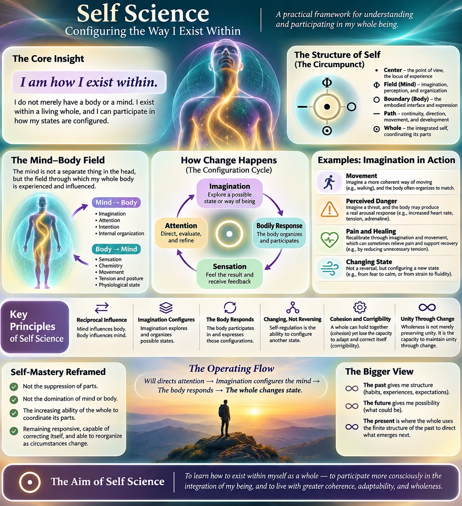

The Starting Point: I Am One and Many
Self Science begins with direct experience.
I exist. I experience. I am one being, yet I am composed of many parts. I have a body, a mind, sensations, thoughts, memories, feelings, and capacities for attention, imagination, and will. I am a whole with parts. I am also a part of greater wholes. To understand myself, I must understand both my unity and my multiplicity, both my inwardness and my relationships.
My being is not only a matter of what I am, but of how I participate in my own wholeness. I do not merely have a body. I exist within my body. I do not merely have a mind. I exist through imagination, feeling, perception, and organization. And I do not simply undergo my own states passively. I can participate in how those states are configured.
The circumpunct framework identifies structural roles within this whole:
These are roles in an ontological model, not claims that each symbol denotes a distinct measurable physical structure.
Attention: The Meeting Place of Will and Need
The body makes demands through pain, hunger, pleasure, tension, posture, fatigue, and sensation. The mind presents memories, imagery, thoughts, expectations, and emotions. Different needs and possibilities compete for expression. Attention is where the whole participates in determining what becomes foreground, what is explored, and what is acted upon.
Attention is not always chosen. A sound, a pain, a fear, or a sudden memory may capture it. But deliberate attention gives me an opportunity to respond to the state I am in and participate in the state that follows.
Imagination: The Field of Possibility
Imagination is not merely fantasy. It is a way of representing possible movements, situations, feelings, and forms of being. Sometimes it operates spontaneously, producing images, memories, fears, and scenarios without invitation. At other times I can guide it deliberately, choosing a possibility to explore and sustaining my attention upon it.
This makes imagination especially important in Self Science. An imagined situation does not have to occur externally to influence my actual state. If I vividly imagine danger, my body may respond with heightened arousal, faster breathing, increased muscle tension, or a racing heart. The danger may be imagined, but the bodily reaction is real.
Imagination does not provide unlimited or absolute control over physiology. Its influence varies with experience, bodily conditions, context, and the state of the nervous system. Yet the influence itself is meaningful: what I represent internally can change how I am physically organized.
Walking: The Practice of Being Within
As I walk, I can attend not only to where I am going, but to how I am being within my body. I can imagine a more coherent way of moving and notice changes in posture, breathing, balance, muscle tension, and gait. I do not need to command each muscle individually. I orient toward a whole-body configuration, and my movement may begin to reorganize around it.
The optimal configuration is not necessarily perfect posture or maximum conscious control. It is a flexible coordination suited to the body, the task, and the environment. Too much interference can disrupt a movement that the nervous system already knows how to perform. Deliberate attention works best when it also listens to bodily feedback.
Mind, Body, and Chi: Influence Goes Both Ways
My imagination and mind are not merely detached instructions sent to a passive machine. Mind and body are continuously interacting. Sensation, movement, hormones, posture, and physiological condition influence how I think and feel. Attention, intention, imagery, expectation, and memory influence the way I move and respond.
Within the circumpunct, I propose understanding Φ, the mind, as a dynamic organizing field of embodied experience. When I speak of this field “running through my body,” I am describing an experienced pattern of whole-body influence and coordination, not claiming that science has measured a separate substance or energy called mind.
This also offers an interpretation of chi. Chi may name the felt coordination of mind and body: the sense of vitality, direction, coherence, and movement that arises when an organism functions as an integrated whole. Traditional uses of qi are broader than this interpretation, but the comparison helps describe the experience.
The relationship is reciprocal: the mind influences the body, and the body influences the mind. The whole is continuously changing through their exchange.
Recalibration: Changing States, Not Reversing Them
Through movement and imagination, I sometimes find that I can ease pain or improve how my body functions. I may discover a less tense way of moving, reduce unnecessary guarding, or shift attention in a way that changes the experience of discomfort. These changes are worth observing carefully, while remembering that pain relief is not the same thing as proof of faster tissue healing.
The deeper insight is not that I reverse an unwanted state. I configure another one. Fear and calm, heaviness and fluidity, tension and ease are not simply positions on one switch. They are different patterns of an embodied system.
This distinction changes the practice. Instead of fighting the present state, I can observe it, learn from the parts involved, imagine another viable organization, and test what changes. The body’s response tells me whether to continue, adjust, or stop.
Cohesion Is Not Corrigibility
Self-mastery is not the suppression of parts. It is the increasing capacity of the whole to coordinate them without becoming captive to any one of them. But this requires a more careful distinction than saying that a whole which ignores its parts necessarily loses integrity.
A whole can preserve its structure even while ignoring feedback from its parts. In simulation runs, a leader that ignored its parts could hold the system together across every seed. What it lost was not necessarily cohesion. It lost the capacity to respond when its parts changed.
Cohesion is the ability of a system to remain together.
Corrigibility is its ability to receive information, recognize error or change, and reorganize accordingly.
A stable system is not automatically a healthy or adaptive one. Preserving its current arrangement can become a liability when its parts or its environment change. The same distinction applies to a person who suppresses bodily feedback, a relationship that preserves appearances rather than listening, or an institution that protects its existing procedures from correction.
A healthy whole remains responsive to its parts, capable of correcting itself, and able to reorganize as circumstances change. Its mechanisms of self-preservation must not overwhelm its mechanisms of self-correction.
Time, Attention, and Becoming
The past gives me structure. My experiences, habits, memories, and learned responses influence what I expect, imagine, and notice. The future represents possibilities not yet realized. The present is where the whole participates in what emerges next.
I use the finite structures of my past to direct attention and action toward possible futures. Through those actions, new experiences emerge. They then become part of the finite structure that shapes the next moment.
In this philosophical statement, “infinite” refers to open potential, not a demonstrated infinity of physically available outcomes. The practical insight is that I use what I have become to participate in what I am becoming.
Will directs attention. Imagination configures possibilities. The body responds and provides feedback. The whole changes state. Experience becomes memory, and memory helps organize the next act of imagination.
The Goal of Self Science
The goal is not the absence of constraint, the domination of one part, or a fixed ideal of perfection. The goal is wholeness: a growing capacity to coordinate body, mind, attention, imagination, values, and action while remaining sensitive to the changing needs of the parts.
To become whole is to practice a more coherent way of existing within myself. It is to become capable of deliberate change without losing responsiveness, and to hold together without becoming rigid.
Self Science is the practice of studying and shaping the way I exist within. It begins with direct experience and continues through attention, experimentation, feedback, and correction.
